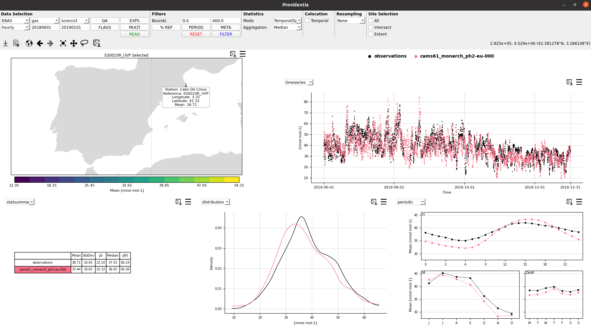
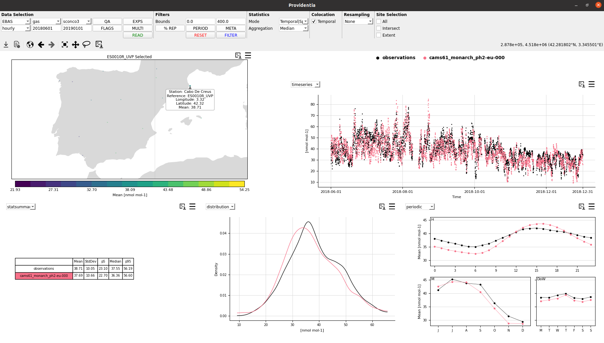
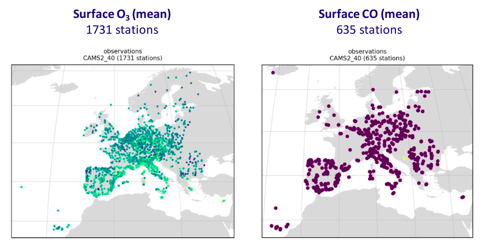
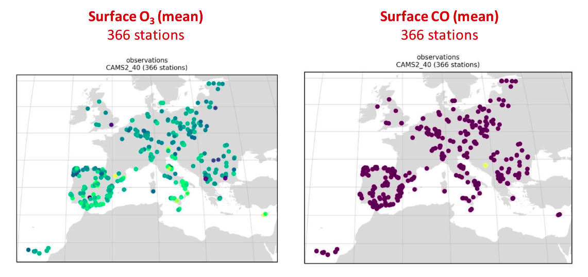

Colocation
There are two types of colocations that can be used in Providentia: temporal colocation and spatial colocation.
Temporal colocation
Temporal colocation is used to temporally pair observations and model data, with any missing measurements in either the observational or model array imposing missing measurements
When the colocation is active, the user has access to more plot types (scatter, taylor, fairmode-target, and fairmode-statsummary), and model bias statistics can be used (e.g. r).
Temporal colocation can be set in the configuration file by setting a boolean as follows, be default it is True:
temporal_colocation = False
On the dashboard it can be toggled by using the temporal coloction checkbox on the top menu bar.
Without temporal colocation:

With temporal colocation:

Spatial colocation
When loading more than one species we may want to ensure that the stations that we have in our network/s measure all the species that we have selected. To do this, we need to activate spatial colocation.
After activating spatial colocation, any stations that do not contain
Spatial colocation can be set in the configuration file by setting a boolean as follows, be default it is True:
spatial_colocation = False
On the dashboard, only 1 species is allows to be loaded at the same time, so in theory it should not be possible to use. However there is a workaround using filter_species. If we filter the current loaded species with one or multiple filter species,
Without spatial colocation:

With spatial colocation:
